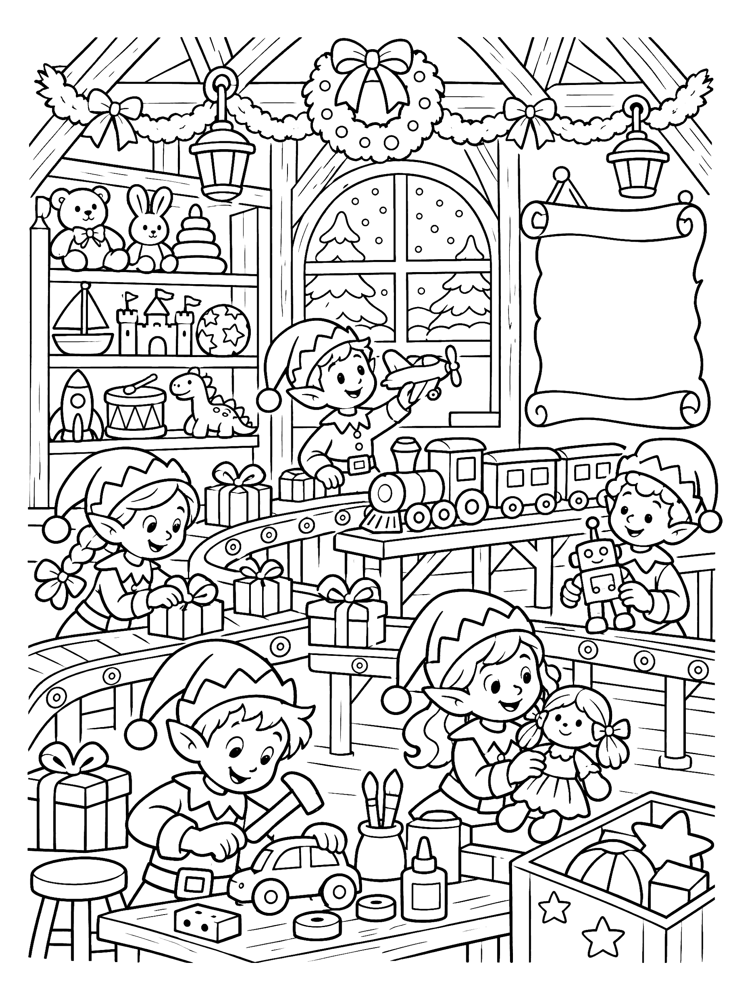
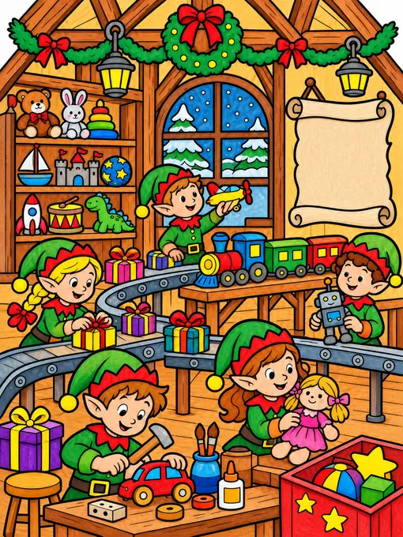

Santa's Workshop Coloring Page
Whimsical Free printable · Letter and A4
Busy elves building toys in Santa's workshop with conveyor belts, shelves of toys, a toy train and a big list on the wall.

Color ideas
Here is one way to color it. Good colors to pull out: dark brown, brown, orange, peach, gold, forest green.
Want this small colored picture printed in the corner of the page as a guide? Open the print options and switch on Color guide.
About this page
A storybook scene with medium detail and plenty to find. Great for kids about 6 to 10.
It prints on one sheet of regular paper. For markers, use heavier paper or put a spare sheet underneath. In the print options you can also print two per sheet, switch to light gray lines, or add a name line.